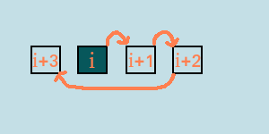
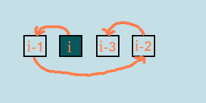

Сдвиг массива
Итак, сдвиг массива c использованием второго массива. Его предпочтительно делать в цикле, вычисляя для каждого элемента его новую позицию. Казалось бы, что может быть проще? Просто прибавить к старому индексу некоторое значение.
Пусть i - индекс элемента в старом массиве, new_i - индекс этого же элемента в новом массиве, а move - на сколько надо сдвинуть элемент. Тогда, казалось бы
C++
new_i = i + move;
Pascal
new_i := i + move;
Python
new_i = i + move
Но что будет, если i + move больше, чем размер массива? Тогда отсчёт продолжится с начала массива:
А в описанной выше реализации произойдёт выход за границу массива. Что делать?
Вопрос "на засыпку": какая операция позволяет превратить индекс, равный индексу последнего элемента плюс один, т.е., равный длине массива, в ноль?
Ответ: остаток от деления!
Получается такой код (пусть n - длина массива)
C++
new_i = (i + move) % n;
Pascal
new_i := (i + move) mod n;
Python
new_i = (i + move) % n
Эта реализация обрабатывает также случай, когда сдвиг больше длины массива, т.к. остаток от деления гарантирует, что new_i < n.
Казалось бы, код готов. Но, как гласит анекдот, есть один нюанс. Что будет, если сдвиг идёт не вправо? Правильно, он будет иметь отрицательный размер. В принципе, в этом нет ничего страшного. Но теперь могут появиться отрицательные индексы, которые не дружат с большинством языков. Должно произойти следущее:
Снова вопрос "от Жака Фреско": как превратить индекс, равный минус одному, в индекс, равный n-1, т.е, в последний индекс массива? Правильно, прибавить n. (если кто-то не в силах посчитать, то -1 + n = n - 1)
C++
new_i = (i + move + n) % n;
Pascal
new_i := (i + move + n) mod n;
Python
new_i = (i + move + n) % n
Реализация подсчёта индекса почти завершена. Если i + move + n >= 0, то всё работает корректно. Осталось обработать только один случай: что будет, если сдвиг отрицателен и его размер по модулю больше n? Тогда опять получится отрицательное число. Самый простой способ обработать этот случай - сделать move меньшим, чем n.
Вопрос: какая операция позволяет это сделать?
Ответ: остаток от деления! Надо применить его к сдвигу. Получается такой код:
C++
move = move % n;
new_i = (i + move + n) % n;
Pascal
move := move mod n;
new_i := (i + move + n) mod n;
Python
move = move % n
new_i = (i + move + n) % n
Отлично, вычисление нового индекса написано! И написано весьма красиво: нет ни одного условного оператора.
Теперь дело за малым: встроить сие чудо в цикл, обрабатывающий массив (пусть arr1 — первый массив, а arr2 — второй):
C++
move = move % n;
for (int i = 0; i < n; ++i)
{
int new_i = (i + move + n) % n;
arr2[new_i] = arr1[i];
};
Pascal
move := move mod n;
for i := 0 to n - 1 do
begin
new_i := (i + move + n) mod n;
arr2[new_i] := arr1[i];
end;
Python
move = move % n
for i in range(n):
new_i = (i + move + n) % n
arr2[new_i] = arr1[i]
Есть два важных нюанса в использовании этого алгоритма. Во-первых, выполнять деление сдвига с остатком следует вне цикла, чтобы не совершать лишних операций. Во-вторвых, рекомендуется использовать (и вообще во всех алгоритмах на языке Pascal) стандартную индексацию массива: это избавляет от многих сложностей.
Массивы ©Все права защищены